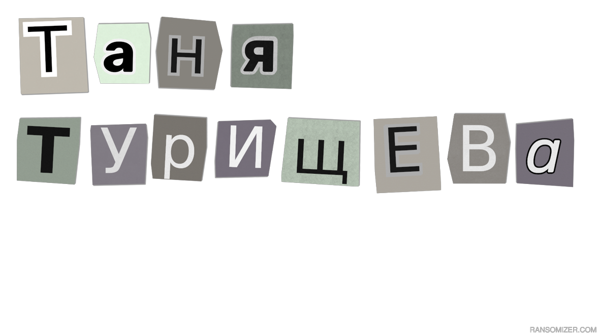
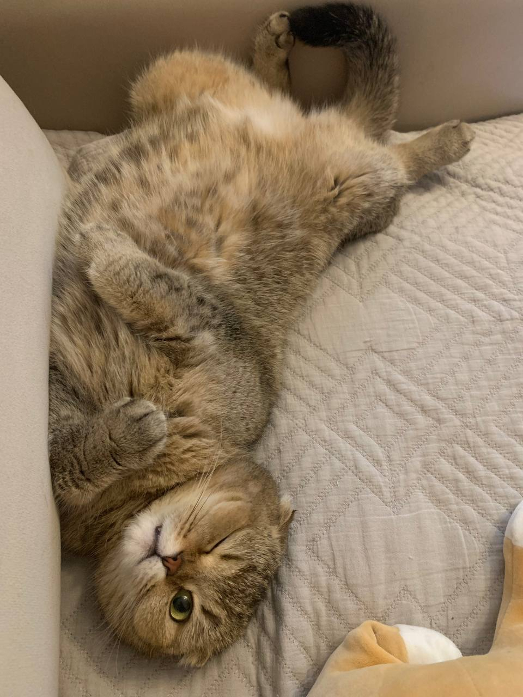

Место учебы
Фундаментальная и прикладная лингвистика, НИУ ВШЭ, Москва

Фундаментальная и прикладная лингвистика, НИУ ВШЭ, Москва
Москва
№2083, ЦПМ
Я закончила художественную школу и 9 лет танцевала русские народные танцы. До смены школы училась в математическом классе, потом перешла в лингвокласс. У меня есть потрясающая кошка и две шляпы: волшебника и ковбойская. 
• Чего бы я хотела от учёбы здесь?
Я хочу научиться лучше формулировать свои мысли, лучше думать и пробовать что-то новое. Меня всегда интересовала проектная и исследовательская действия и надеюсь, что меня ждёт много такого опыта здесь.
• Мои языки
Сейчас я учу финский и немецкий и очень их люблю. В средней школе учила французский, в старшей школе 2 года изучала древнегреческий и древнерусский. Так сложилось, что я иногда беру на год или пару месяцев язык "на попробовать": так я учила эсперанто, польский и чешский.
• Мои хобби
В свободное время я люблю готовить разные напитки, собирать пазлы и смотреть анимационные сериалы. Ещё я люблю отжиматься и гладить кошку. С друзьями я часто хожу на разные выставки.
• кошка!!